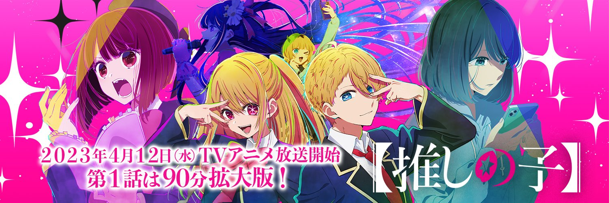
本文系 2023 年春季番《推しの子》的追评，我沿用了第 2 集短评的副标题。毕竟这份连载算是我看到哪里写到哪里，想说什么就说什么。所以大概或许应该从第 3 集开始我就不会很想说些什么了（？
（写上面这段序的时候第 3 集还没放送，看看我的观感会不会变成现实吧）
| 写在《推しの子》第 1 话后：「初夏的冲击」让我意难平
| 写在《推しの子》第 2 话后：冲动与无解的循环
(Update Time: 2023-04-20)
我似乎从没有这么「喜欢」过一部作品。但我其实是清楚的，这部作品并没有那么优秀
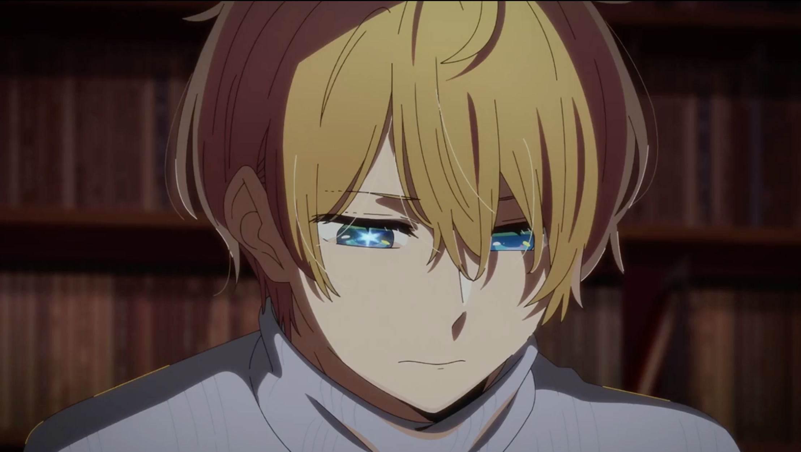
在上周末看完《推子》的第一话之后，
我已经循环播放「アイドル」超过 223 遍了。
我相信我的包月 Apple Music 应该不是这么用的（捂脸）
但是，有一件重要的事情。
我似乎从没有这么「喜欢」过一部作品。
我其实是清楚的，这部作品并没有那么优秀。
这会让我很容易对作品失望，然后让我越来越不敢看番。
这不好。
简单看了看东瀛啁啾。
不出我所料，在第 2 集放送之后评价已经出现了下滑，就和《紫罗兰永恒花园》当时的情况一样。
即使在第一集中使用了一些增进观感和冲突的小手段，这些使用特别的手法渲染的气氛和热忱会很容易在日常的无趣中消散。
而我知道这部作品和《京紫》一样，日常占据了主线的发展契机，剧情后期缺少核心的爆点。情绪就像一条沉在水底的暗线，始终蓄势待发但始终浮不起来。
赤坂缺少撰写长篇脚本的能力。
这部作品会成为一部「优秀的作品」，但很难称之为「佳作」。
但是我依旧有着莫名的冲动。
这冲动又是从何处来的呢？我不知道。
回到第 2 话本身。
作为衔接前后的过度集数，作画和分镜的质量有着 肉眼可见的下滑。
这里的「下滑」并不是贬义，集英社头牌 怎么可能缺经费？（bushi）
只是随着回到正常的叙述轨道，为了观感的平和以及制作的节奏，不可能继续延续和第一集一样的「堆料」。而且由于剧情也回到了常见的日常系节奏，观感逐渐乏善可陈，第一集的用力过猛暴露无遗，评价回归也是正常现象。
是平平无奇但是看得很舒服的过渡一话。
我很喜欢 ED 的插入处理，能看出监督想渲染搞笑气氛的尝试，虽然没成功。
不过，第 2 话出现的没成功的搞笑尝试实在是太多了吧！但是我无法指摘监督，这一话基本是对原作漫画分镜的「忠实再现」。
赤坂明全责。
（啊不是我能吐槽一下为什么一个主旨是「爱」与「欺骗」的「转生复仇流作品」却在努力逗哏啊！为什么啊！）
然后，我要着重称赞 OP 和 ED。
被 OP 糊脸的我实在无法压制自己的兴奋，跑到啁啾发了句感想：
Damn who drew this OP storyboard?
so fxxking awesome.
惊艳的分镜剪辑，我无需多言。 欣赏原片比我能说的更多。

看完 ED 的我想问一句：
「星野アクア、君の破壁人は誰だ？」（笑）
主不在乎。（笑的更大声了）
【主已全款预定初回限定盘】
相比于第一集的亮眼 （惊吓），后面将会回到正常的叙述轨道。
他们的故事还将继续，我也会继续守望下去。
赤坂老师给点力吧（叹气）
| 写在《推しの子》第 3 话后
(Update Time: 2023-04-29)
推三，看了 5 分钟了。
稳扎稳打尊崇原作的分镜，这很好。
看得我想开二倍速。
然后，真不幸运，真开二倍速了。
能让我坚持下去的唯一动力就是阿夸的脸了。
所以这一集的分镜师是谁啊？我想和你好好交流交流。
| 写在《推しの子》第 4 话后
(Update Time: 2023-05-04)
首先，青年节快乐，愿全世界青年朋友都能所念皆所愿。
前半和后半的衔接有些生硬，如果是我会把前半处理在第 3 集里。毕竟前半部分主要的目的是延续上一集的爆点以至于不让入校篇观感过于平淡，但现在这样的分配依旧让我觉得第 3 集节奏过慢，第 4 集意义不明。
然后我很好奇，现在戏路始终徘徊在没有感情的 Poker Face 男青年（俗称「司马脸」或者「小猫批脸」）的新声优实在是越来越多了，我觉得这不是件好事情。
大塚刚央，还是太年轻了。
他的声音不足以托起作品前半部分的冲击，刻画过于单薄，没有太多出乎意料的点。虽然这和稳扎稳打复刻漫画分镜不无关系，但是监督应该可以处理得更加巧妙。我曾经探讨过漫画、小说和动画由于「媒介不同」而产生的体验以及叙述逻辑上的显著差异，这应该要引起显著反思。
不过说实话，平牧大辅是一位善于描绘「日常感」的监督。
但是这部作品描绘「日常感」反倒是有些脱线啊。设定堆的太满了，现在再怎么描绘日常也托不起来了，这是大赤的问题。
以及作画开始穷起来了。第 4 集有一段不算短的第 1 集的兼用卡，PPT 也开始用起来了。以及中景？这中景怎么回事？ 中景原画师我们好好谈谈吧。
然后，中景都画成这样了还在延续从第 2 集开始的所谓「逗哏感」的 ED 插入……
还我中山直哉的美图！快还我！
| 写在《推しの子》第 5 话后
(Update Time: 2023-05-13)
晚了 3 天，但是没什么问题。
我确实现在不是很想说些什么了……
就脚本而言，第 5 集还行。我唯一能指摘的就是一周前谈到的「稳扎稳打复刻漫画分镜」。但是这剧情 真的真的真的真的真的 不适合日常向发展……
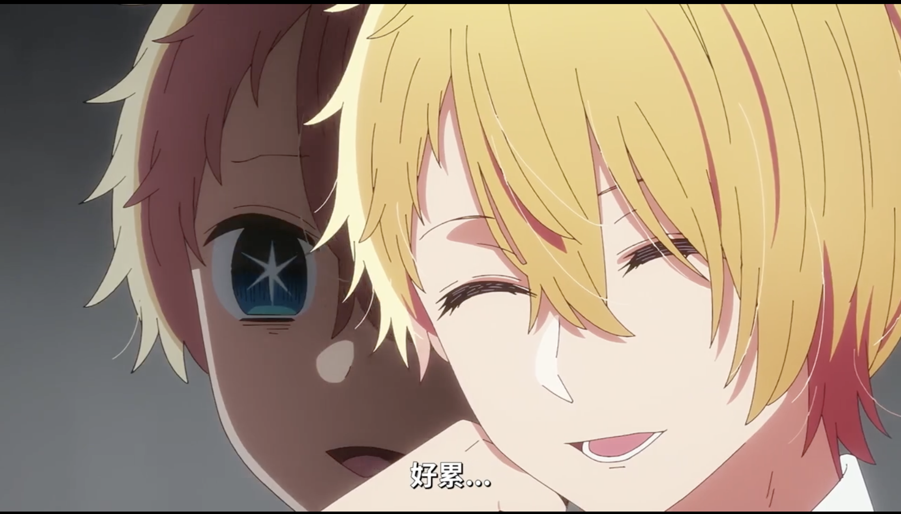
B 小町，堂堂出道。我很期待（棒读）
以及啾啾仔……我不是很能接受土味内容。这里要附议一下横枪老师，「长度比我想象的长 10 倍」，只不过我不是很能笑得出来……
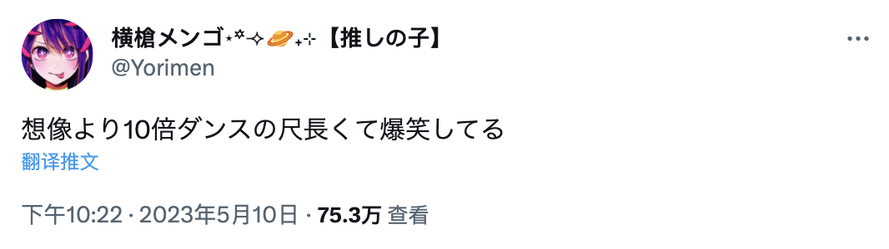
下集应该要到剧情迈向「日常向发展」后的第一个「重要转折」了。所谓的阿夸人际关系的 Huge Gap。即使这所谓的「重要转折」比 You know that work 无职转生 的「天地波」弱好几个数量级，也比「摇撼人心」的第一集欠缺「剧情烈度」，大赤老师更是不想在后期剧情给任何向所谓「向深度演进」的机会。
但是讨论热度应该够的。大赤老师知道如何让剧情选择弹幕最多的一条。
看看远方的 117 话吧朋友们
然后动画工坊，你的中景画师去哪里了？
所以爱会消失吗？找点东西夸夸吧。虽然阿夸的所有中景全都崩的让我难绷……
谢谢你没画坏阿夸的眼睛。

| 写在《推しの子》第 6 话后：「穷且益坚，不坠青云之志」
(Update Time: 2023-05-18)
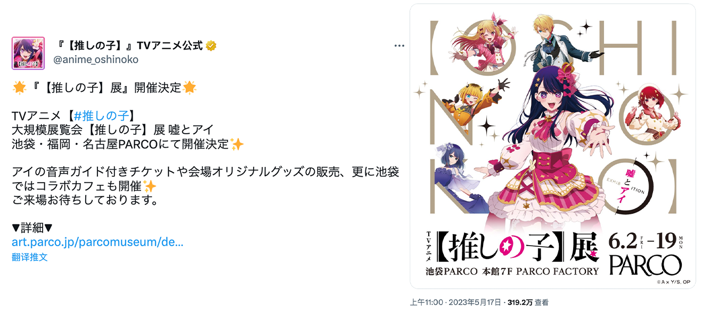
其实我还是有点想吐槽 OP 的阿夸，那个侧脸我觉得没画好。
但是 OP MV 再生数破亿了！恭喜 YOASOBI~
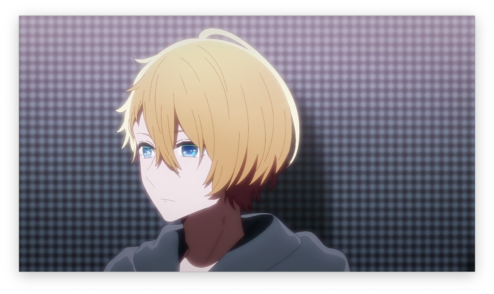
然后再聊一个没啥大用的点。「监督 平牧大辅」那个字出现的位置，配合画面和音乐，确实很有感觉，每次看都这么觉得。但是，一集更比一集穷的作画是怎么回事……很多画面的构图我也觉得有问题，应该是前期 Layout 的时候和作监沟通的问题。以及这集的 PPT 问题比上一集还要严重，中景的问题依旧存在……
动画工房你之前绝对不是这种质量啊 ほら！我真的很难绷……
很难想象「动画工房」能成为「穷」的代名词。
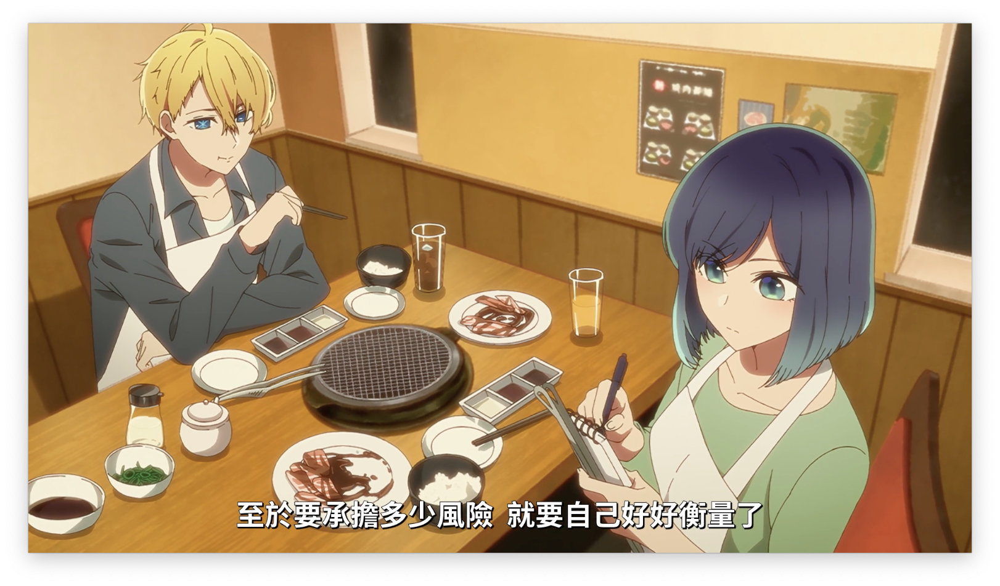
前半段不温不火。
唯一的感受就是「画面好穷」，剧情的张力表现全部寄托在后半段的「跳天桥」上。
不过万幸不算让我失望。
这段画面调色上的处理手法让我想起了 CloverWorks 的作品，毕竟石滨真史监督相当中意这么做。还记得《堀与宫村》嘛？（但是我不喜欢它负责的 YOASOBI MV（这话另说
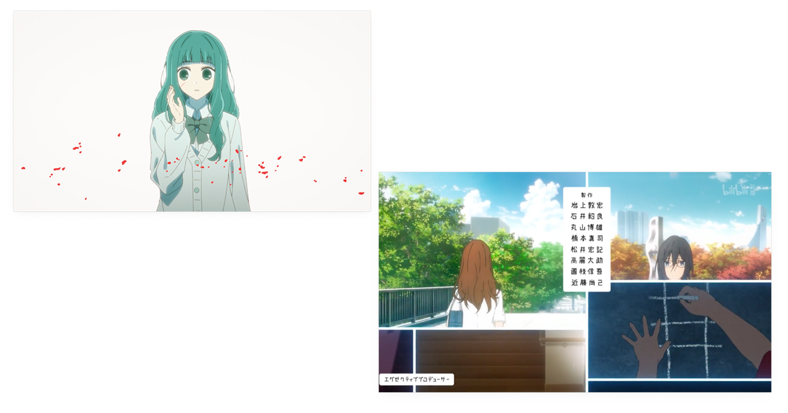
自从经过了《你的椅子 铃芽之旅》的洗礼之后，我现在特别忌讳把感情营造放在剧情之外的作品，否则会对脚本产生极高的要求，因为要在极短的情绪空间内渲染气氛。《推子》中黑川这段「真情表白」算这样的场景吗？这段当然算，但是这比所谓的「大地震共情」具体且落在实处多了，以「大地震」为情感抓手还是更抽象一些…… 新海诚选了一个不是设身处地或者共情能力极强的人极难受到感染的角度，而角色自身的闪光点（主要是在角色塑造的方面，详情可以看【这篇文章】）又表现得有些欠缺。但即使落在了一个现代年轻人都容易共情的桥段上，第 6 集中表现黑川前期「努力心」的剧情推进依旧缺少所谓的「烈度」。可惜的是，只有当这段剧情的烈度彻底达到一个足够引爆情感的程度，后续剧情处理中的那段「忙音」和「黑屏」才能有足够震撼观众内心的情感重量。
真的有点可惜。
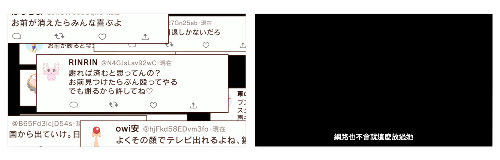
但是，我觉得平牧监督很努力了。
好吧，是真的穷啊，花样做 PPT。
这集的 PPT 含量确实有点过高，表现「赛博信息流」有着比 PPT 更富戏剧张力的表现形式，有诸多前作都有着相当出色的表现，出现在这里纯粹是省经费。
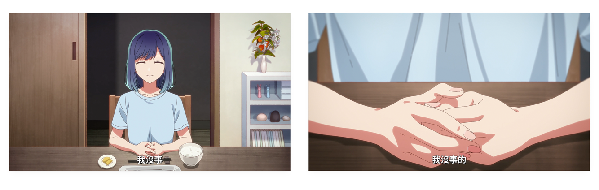
但是脚本和分镜考虑了很多细节。包括黑川背后的房间是黑色的，把角色投在阴影里，加上这出推进的「不安全感」的手部动作特写，以及声优用轻松但是略带颤抖的语气说「大丈夫得斯」……
努力了好吧。你说我能说监督不努力嘛？
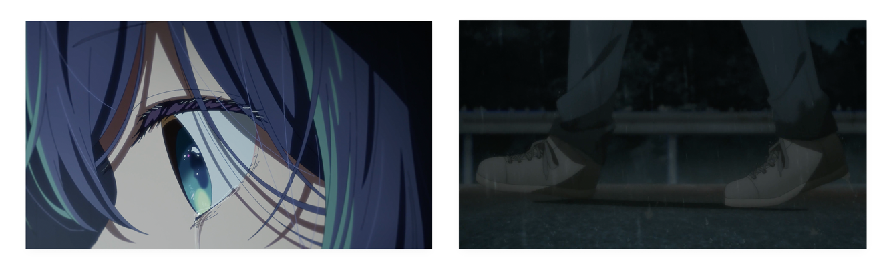
后半部分算不上出色但是可以称之为优秀的「低气压」营造。通过回忆杀「走马灯」的渲染，和不停的步伐特写，然后接着黑屏、雷声、步伐，进入「无人之境」。谢谢这段「回忆走马灯」，丰满了剧情的同时给了 PPT 合理的存在理由，通过「现实生活中一直以来的诚恳努力」对照「赛博世界里突如其来的网暴诋毁」，提供了相当充足的表现张力，也不像前几集拘泥于漫画原本，可以说终于用上了媒介的力量，做出了自己的风格。超乎我预想的努力！但这本该是动画工房从第二集开始就带给我的观感，它来得太晚了。
不过这段渲染这么《世界尽头与冷酷仙境》，平牧监督就说你看没看村上春树吧（笑）
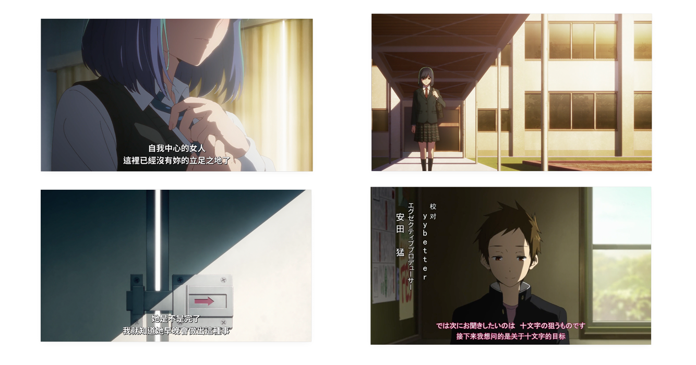
监督同样想试着用光影渲染场景氛围，这当然很好，纵使这处分镜的「剧情烈度」和「情感浓度」完全与《冰菓》不在一个数量级，在阴影里的里志呐喊但充满感叹和力量…… 武本康弘监督和西屋太志监督是光影的大师（再次强烈建议各位去瞻仰一下《冰菓》，真的是动画作品中稳扎稳打派的绝对 masterpiece，京都动画真的很懂如何「优雅地谄媚观众」）。
有趣的是，《冰菓》也是一部「将灰色变成彩色」的校园物语。
但是《推子》的渲染明显缺少「剧情烈度」，这是反倒是这部作品最需要的。
虽然能看出监督和脚本非常努力地通过节奏和转场去营造氛围，但是无奈能力和条件有限只能叹息。在这方面，他们何尝不是另一个世界线上的服部里志呢，无论怎样努力都无法接近奉太郎的里志，「不再为了所谓的满足而徒劳」。努力让故事回归故事，番剧反倒是变成了蒙太奇的艺术。
「穷且益坚，不坠青云之志」。
这期标题有了，谢谢王勃。
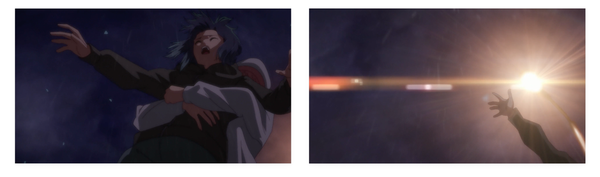
但是我还是要赞美监督。将黑川赤音从黑暗中拉了出来，这束光来得正是时候。无论有意还是无意，谢谢你。
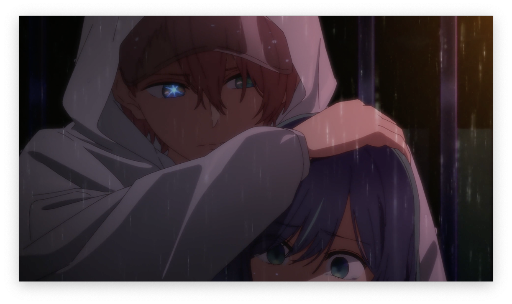
但是阿奎亚，你不配成为这束光。
你知道我在说什么。
为了去截图对比，回看了一下《堀与宫村》，薄纱推子，各种方面（叹气
| 写在《推しの子》第 7 话后：老树发新芽
(Update Time: 2023-05-25)
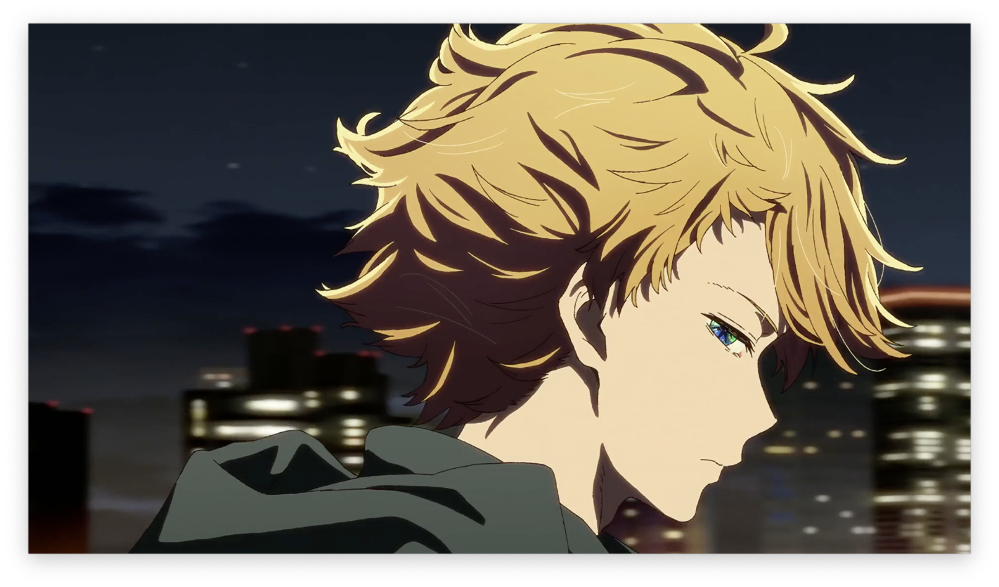
今天是 5/25，愿大家都能拥抱自己的迷惘，找到真诚的希望。
又是一个周四，开启新一期的《推子》吐槽。
之所以截了这么一个静帧，是为了说明一件事情。众所周知，一部连载番剧的 OP 与 ED 的作画通常是全片质量最高的作画。这点其实在《推子》中并不是非常明显，因为「神一样的第 1 话」。OP 很明显能看出这作品的一个倾向，就是 倾向于采用中近景的人脸特写去突出角色此时的表情、心境 and something else but important。这是这部作品的人设赋予的优势 —— 着重通过描绘「瞳孔」完成所有的叙事的作品实在是难找到第二家。
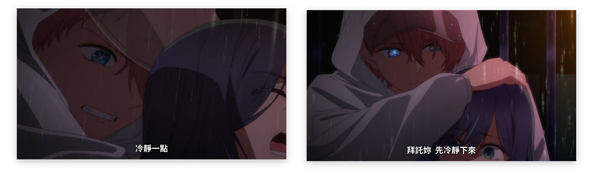
开局紧接上一话的结尾。通过这次比上一话还刻意的摄影机走位，可以知道那束路灯光线就是刻意的，但是在场景气氛的营造上摄影部门还需要动点脑筋。即使大雨深夜的背景产生了点操作难度，但是颜色和灯光是可以很好烘托气氛的，这个片段并没有体现出来。
然后，刚央桑，那段真情流露，尤其是那句「冷静一下，我不是你的敌人」，你配的好油腻。
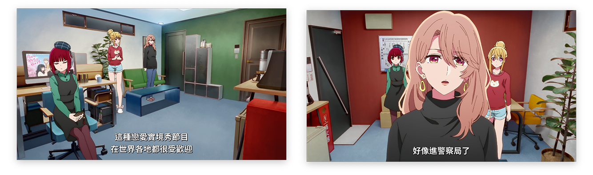
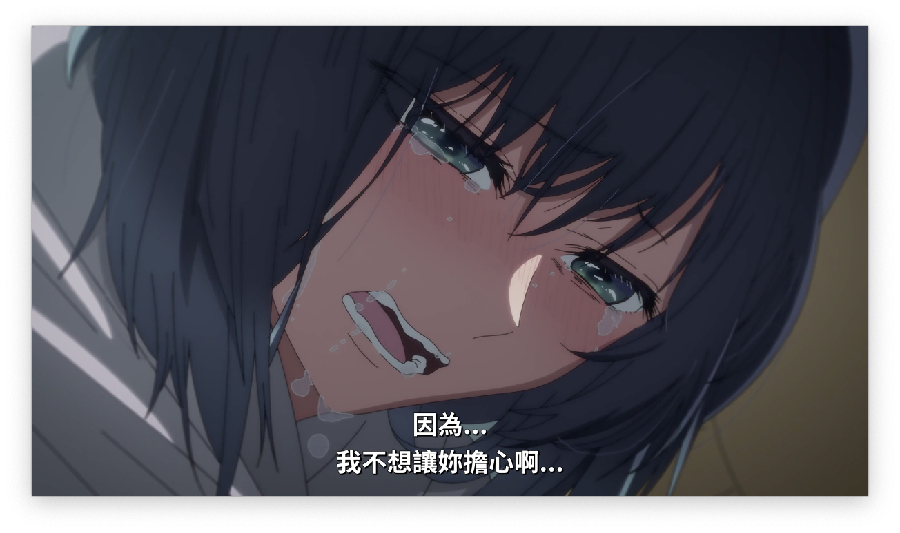
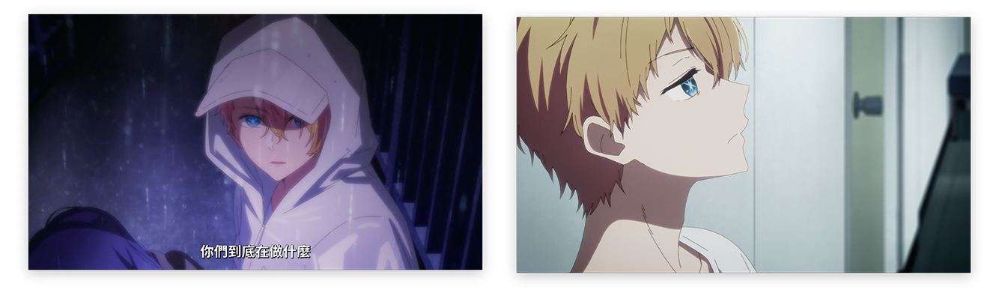
我已经不想吐槽这番的中远景了，我想不出理由来。谁能告诉我为什么！经费全在第 1 话了是嘛！
但是，近景的经费还是足的。经费几乎全在半静止帧近景人脸上。
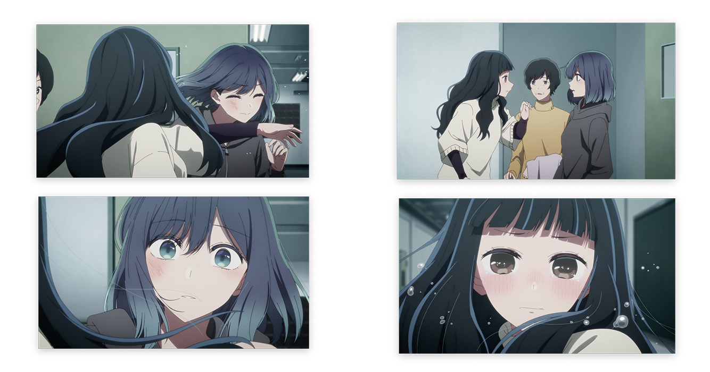
作品的中远景作画配不上声优的演技，平淡的平移镜头加上音效缺少魄力。纵使整个场景的表情都有些欠缺表现力，虽然我前面刚刚才提到「这部作品倾向于采用中近景的人脸特写去突出角色此时的表情、心境 and something else but important」，但是一巴掌结束后的同位摇摆镜头虽然很常见但是很合适，一个简单的镜头就叙述了当事双方的感情。所有的中近景人像镜头基本都还算是能看，不乏佳作。我觉得人设老师可能去当作监了，一笔一划在那里修啊，就害怕那些原画师不讲武德画坏她的宝（笑）
但是抛开那些优秀的片段，这段的摄影部分存在部分运镜意义不明，这或许并不是我能评价的范畴，只是我有些难以理解。不过我能指摘的是，总觉得原画师对人体面部结构的掌握存在点问题，阿夸的脸总是变成平面大饼脸。
所以这段一会儿优秀一会儿欠缺到底是谁的锅呢？
反正不可能是原作和监督的锅。
因为日本专门产不粘锅。妈妈很喜欢，很好用，下次还买。
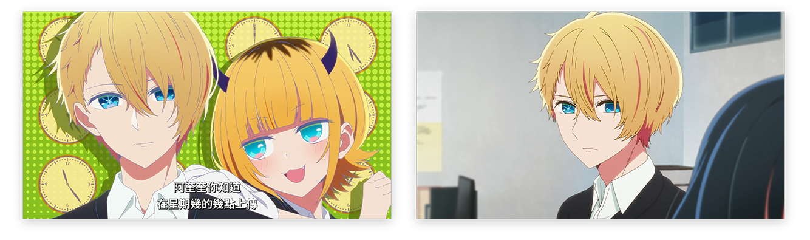
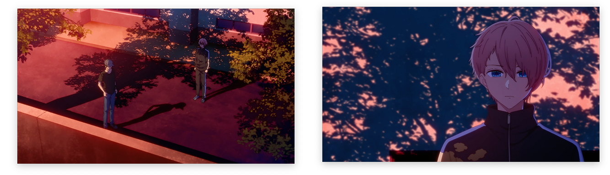
监督也学会了用色彩和光线。这应该是我在上一话谈论《冰菓》的时候讨论的地方，这点我相当欣赏。这篇夕阳很轻易地就带出了情绪。只是场景音和声优的演绎有些缺乏感染力，我很难在他们的语气里读出剧情。
但是连这里都夸的我真像是「在剩的蛤蜊壳里挑剩下的芹菜吃」，这不好。
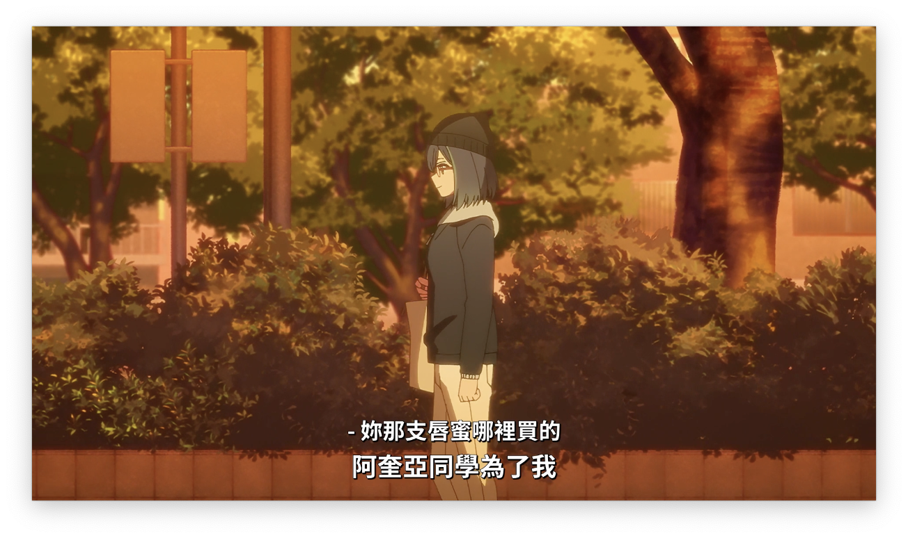
结尾。黑川区域的分镜复用是用来描绘角色心境的转变的，是一个小巧思。纵使我觉得应该在之前就加上无论是 BGM 还是剧情上的些许气氛可能对帮助观众对剧情的理解更有帮助。但我无所谓了，这作品相当「自由」。
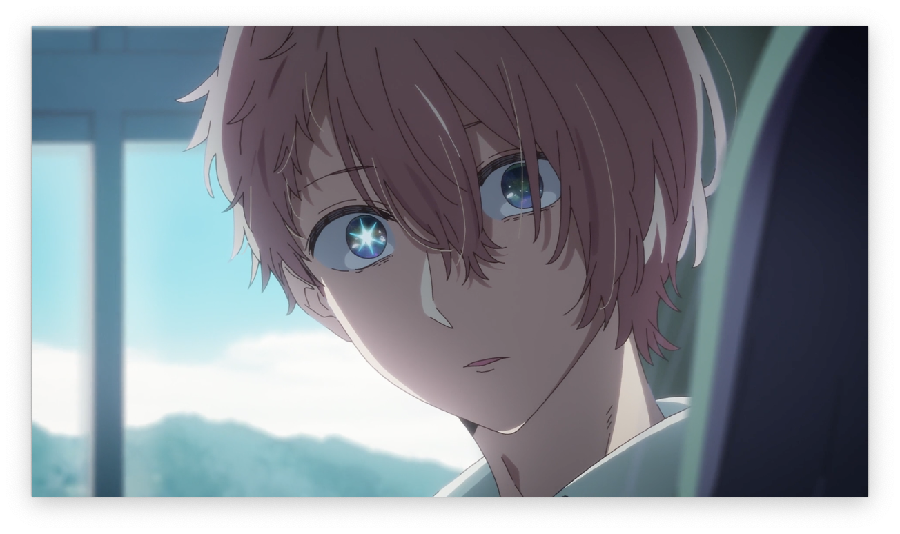
然后，刚央桑！你确实有点缺乏表现力啊！画面也缺乏表现力啊！这个表情再配上那声粗喘，我第一反应不是阿夸「被吸引」，而是新冠阳了喘不过气了还是别的什么东西。我觉得气息不稳比那声粗喘更合适。
更重要的是，星野爱是独特的角色，她的独特在方方面面。
这段剧情相比于「这部作品倾向于采用中近景的人脸特写去突出角色此时的表情、心境 and something else but important」，更适合用动作细节去解释剧情。无论是阿夸还是赤音「星野爱附魔」的演出，看到阿夸颤抖的手，或者眉间滴落的一滴汗，都会比看见填充满画面 2/3 的而且还有点崩的大脸更富冲击力。仅仅用单调的镜头确实让我有些失望，镜头演出选择的角度和拍法上总让人觉得平庸。
我觉得和监督不无关系。可能还是动画工房和芳文社在一起久了，小甜番做多了，这种稍微带一些「疯癫」特征的作品就有些超出监督的掌握了。
你要是找什么痞子，那这番不能看了；你要是找内海纮子，可能阿夸和他爹搞 BL 去了。
结尾，我完全没感受到那阵「魔怔感」，包括阿夸视角和赤音视角。
第 7 话的剧情是黑川赤音进入主线的开端，是接下来主线剧情的重要推进力，也是确立星野 アクア 这个角色的重要篇章，也是最让我意难平的篇章的开端。我完全不会要求这里的演出有第 1 话结尾的那个烈度，那个烈度前没几个古人后我很怕有来者。但即使与一些日常向作品相比，第 7 话依旧还是缺少一些「剧情烈度」。
「老树发新芽」，本质依旧没变。我很失望。
然后，没有人能比得上星野爱，没有人。